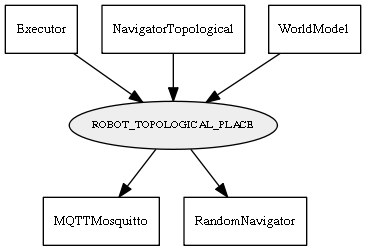

Global overview
All modules
All variables
All commands
Mission files
Pipelines
Variable: ROBOT_TOPOLOGICAL_PLACE
Variable info:
Variable name
Short description
Who publishes it?
Who subscribes to it?
ROBOT_TOPOLOGICAL_PLACE
The id of the closet node in the world model graph to the current robot position
Executor
NavigatorTopological
WorldModel
MQTTMosquitto
RandomNavigator
Variable graph:

Detailed description:
The id of the closet node in the world model graph to the current robot position
Page generated by
Mooxygen 1.1.0
at Thu Jan 22 11:30:21 2015